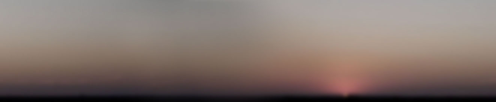
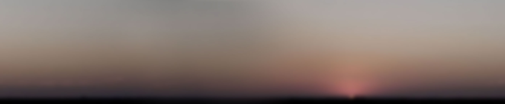
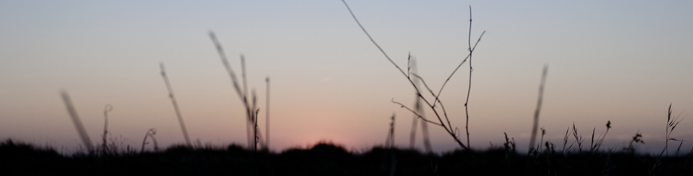
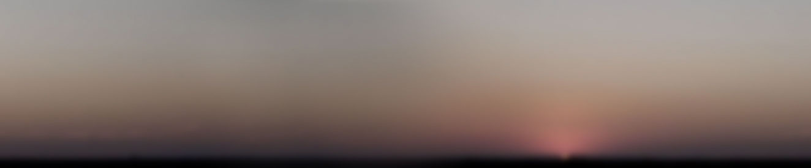
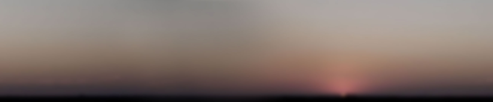
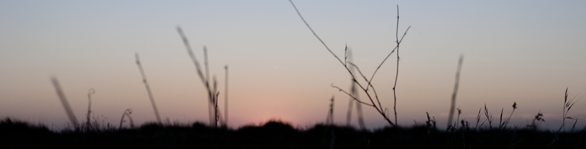

Les infiltrés un film de Khaled Jarrar, 70’, Palestine, 2012
Silvered Water, Syria Self-Portrait un film de Wiam Simaw Bedirxan und Ossama Mohamed, 90’, Syrien, 2014
Fidaï un film de Damien Ounouri, 82’, Algérie, 2012
Return to Homs un film de Talal Derki, 88’, Syrie, 2013
Vagues un film de Ahmed Nour, 71’, Égypte, 2014
Contrôler et punir un film de Ayten Mutlu Saray et Ridha Tlili, 90’, Tunisie / Suisse, 2014

Le cœur du programme FAJR: courageux, novatrices et dynamiques films documentaires et fiction. Ces œuvres cinématographiques seront présentés par les cinéastes invités, venant de la Palestine, Tunisie, Syrie, l'Algérie, Égypte et des Comores. Ces invités seront présentés au public, par les cinéastes et professionnels de cinéma de Bienne, Berne et Bâle.
FESTIVAL DE L'AUBE développé deux modèles pour discuter et analyser des films:
1. Sur la base des discussions entre les cinéastes invités et les professionnels de cinéma Suisse.
2. Au public et aux étudiants (Uni Bâle, Bern, Institut de littérature de Bienne, l'Ecole d'Arts Visuels Berne et Bienne, FHNW Bâle) avant chaque film sera communiqués une référence avec laquelle ils peuvent examiner le film pour eux-mêmes. Les participants écrivent leurs pensées sur le film qu'ils donnent à la fin du film à la sortie.
Cette analyse de l'audience sera lue à la soirée de clôture et publié sur le site du festival.
Le public et les étudiants sont le jury, qui reflète les films avec leurs propres mots.
FREITAG / VENDREDI, 13.03.2015, BIEL / BIENNE
Kino Rex 2 / Cinéma Rex 2
Sheherazade, Nacer Khemir, 80’, Tunesien/Tunisie, 2011
La danse du vent, Taïeb Louhichi, 80’, Tunesien/Tunisie, 2003
Fidaï, Damien Ounouri, 82’, Algerien/Algérie, 2012
Vagues, Ahmed Nour, 71’, Ägypten/Égypte, 2014
Les infiltrés, Khaled Jarrar, 70’, Palästina/Palestine, 2012 (Film d'ouverture)
Nach der Revolution, Yousry Nasrallah, 102’, 2012, Ägypten
When I Saw You, Annemarie Jacir, 96’, 2012, Palästina/Jordanien
Sheherazade, Nacer Khemir, 81’, Tunesien, 2011
Return to Homs, Talal Derki, 88’, Syrien, 2013
Waves, Ahmed Nour, 71’, Ägypten, 2014
Homme d’Oran, Lyes Salem, 128’, Algerien, 2014
La danse du vent, Taïeb Louhichi, 80’, Tunesien, 2003
Yema, Djamila Sahraoui, 90’, Algerien, 2012
Infiltrators, Khaled Jarrar, 70’, Palästina, 2012
Fidaï, Damien Ounouri, 83’, Algerien, 2012
RETROSPEKTIVE EDWARD SAID : An Encounter with Edward Said
DIE PIONIERE FILMVORTRAG: Die Entstehung des neuen Kinos auf den Komoren
Omar, Hany Abu-Assad, 96’, Palästina, 2013
Le Repenti, Merzak Allouache, 97’, Algerien, 2012
Silvered Water, Syria Self-Portrait, Wiam Simaw Bedirxan, Ossama Mohammed, 90’, Syrien, 2014
Contrôler et punir, Ridha Tlili und Ayten Mutlu Saray, 90’, Tunesien / Schweiz, 2014 (Film de clôture)
Sheherazade, Nacer Khemir, 81’, Tunesien/Tunisie, 2011
Scheherazade, das war jene Prinzessin, die ihrem Mann jede Nacht eine Geschichte erzählte und ihm versprach, die Fortsetzung folge in der nächsten Nacht. Sie tat dies um den eigenen Kopf zu retten, denn der Sultan war hintergangen worden und hatte beschlossen, seine Bräute künftig nach der Hochzeitsnacht umzubringen.
Shéhérazade, c’est cette princesse qui racontait chaque nuit une histoire à son Sultan de mari, lui promettant la suite la nuit suivante et qui sauvait ainsi sa tête, car le Sultan, après avoir été trompé et pour ne plus l’être, avait décidé de faire exécuter ses épouses le lendemain de la nuit de noces.
Freitag / Vendredi, 13.03.2015, 11:00, Arabisch m. dt. UT
La danse du vent, Taïeb Louhichi, 80’, Tunesien/Tunisie, 2003
Ein Filmemacher bereist den Süden Tunesiens, um Drehorte für sein neues Projekt ausfindig zu
machen. Eines Nachts fährt er mit seinem Geländewagen in die Wüste hinaus. Sein Wagen bleibt
plötzlich stehen, er ist gestrandet – mitten im Nirgendwo.
Mit Chouikh Mohamed, Louhichi Taïeb, Berrabeh Hatem, Bouzouita Haifa, Rammeh Chakera
Un réalisateur prépare son film et fait des repérages dans le Sud tunisien. Il croise le regard d’une superbe beauté berbère qui lui donne l’ordre de ne pas la filmer. C’est le début d’une errance qui le conduit à sa perte dans le grand désert.
Avec Chouikh Mohamed, Louhichi Taïeb, Berrabeh Hatem, Bouzouita Haifa, Rammeh Chakera
Freitag / Vendredi, 13.03.2015, 13:00, Arabisch m. fr. UT
Fidaï, Damien Ounouri, 83’, Algerien/Algérie, 2003
El Hadi führt ein einfaches Leben in der algerischen Provinz. Er ist ein Familienmensch und einer der unzähligen anonymen Veteranen des algerischen Unabhängigkeitskrieges. Als 1954 der Krieg begann, war El Hadi 14 Jahre alt. Mit 20 meldete er sich freiwillig als Fidaï, als Stadtguerillero der algerischen Bereifungsfront FLN in Frankreich. 50 Jahre später begibt sich Regisseur Damien Onouri zusammen mit seinem Onkel El Hadi auf eine Zeitreise. El Hadi berichtet über einen Lebensabschnitt, über den er lange nicht gesprochen hatte.
Pendant la révolution algérienne, El Hadi, l’oncle de Damien Ounouri, rejoint sa soeur en France et intègre secrètement un groupe armé du FLN. Règlements de compte, tentatives de meurtre, clandestinité, emprisonnements, puis l’expulsion en 1962, date de l’indépendance algérienne, son parcours individuel raconte la „Grande Histoire“. Aujourd’hui, El Hadi a 70 ans et révèle pour la première fois cette partie obscure de son existence.
Projection suivie d’un débat, en présence du réalisateur, animé par Ayten Mutlu Saray.
Im Anschluss an die Filmvorführung ist Damien Ounouri im Gespräch mit Ayten Mutlu Saray.
Freitag / Vendredi, 13.03.2015, 15:00, Arabisch m. fr. UT
Damien Ounouris mehrfach ausgezeichneter Film Fidaï regt mit seiner sehr persönlichen Herangehensweise nicht nur filmisches Denken an, er wirft auch neue Fragen zur Unabhängigkeitsgeschichte Algeriens auf. Seine Filmpraxis entwickelte Ounouri mit Li Hua Films in Paris und er führte bei mehreren Dokumentarfilmen Regie.
Le film Fidaï de Damien Ounouri, primé de nombreuses fois, avec son approche très personnelle, stimule la pensée cinématographique et soulève de nouvelles questions sur l’histoire de l’indépendance de l’Algérie. Il a développé sa pratique cinématographique avec Li Hua Films à Paris et a réalisé plusieurs documentaires.
Ayten Mutlu Saray ist Kunst- und Filmschaffende. Parallel dazu ist sie als Lehrbeauftragte für Filmherstellung und den kulturwissenschaftlichen Film tätig.
Ayten Mutlu Saray est cinéaste et anthropologue. Elle travaille également dans le domaine du cinéma et les sciences culturelles en qualité d’enseignante.
Vagues, Ahmed Nour, 71’, Ägypten/Égypte, 2014
Die Lebensgeschichte einer Generation, die zu Beginn des Mubarak-Regimes in den frühen 80er Jahren in Suez geboren wurde - Suez, die berühmte Stadt am Suezkanal, die als „Flamme der Revolution“ in die Geschichte einging.
L’histoire d’une génération qui est née au début du régime de Moubarak dans les années 80 à Suez. Chacun des sept chapitres du documentaire Vagues raconte une partie de l’histoire de Suez, la ville qui était „l’étincelle de la révolution égyptienne“.
Projection suivie d’un débat, en présence du réalisateur, animé par Stefanie Arnold.
Im Anschluss an die Filmvorführung ist Ahmed Nour im Gespräch mit Stefanie Arnold.
Freitag / Vendredi, 13.03.2015, 18:00, Arabisch m. engl. UT
Ahmed Nour ist ein aus der Stadt Suez stammender Filmemacher. Er übermittelt die Kultur des Widerstandes seiner Stadt in seinen filmischen Arbeiten. In seinem mehrfach preisgekrönten Film Waves erzählt Nour von der Auseinandersetzung mit den Herrschaftsstrukturen seines Landes.
Ahmed Nour est l’un des cinéastes de la ville de Suez. Dans ses oeuvres cinématographiques, il raconte la culture de la résistance de Suez. À travers son film primé Vagues, Nour parle de la confrontation entre les structures de pouvoir de son pays.
Stefanie Arnold ist Geschäftsführerin von Bern für den Film und war von 2000 bis 2007 Mitorganisatorin des Festivals Queersicht. Seit 2009 arbeitet sie im Kino in der Reitschule mit. 2010
hat sie den DAK-Zyklus „Label: Muslim/a“ initiiert und mitorganisiert.
Stefanie Arnold est la directrice générale de Berne pour le Cinéma. De 2000 à 2007, elle était coorganisatrice du festival Queersicht, et depuis 2009, elle travaille au cinéma de la Reitschule.
En 2010, elle a initié et co-organisé le cycle DAK „Label: musulman/e“.
Les infiltrés, Khaled Jarrar, 70’, Palästina/Palestine, 2012
Der Checkpoint ist geschlossen. „Umleitung, Umweg!“, ruft ein Taxifahrer und kündet so den Beginn eines weiteren Versuches an, die Barrieren zu umgehen. Infiltrators erzählt abenteuerliche Geschichten mit unsicherem Ausgang, die alle dasselbe Ziel verfolgen: Auf die andere Seite der Mauer zu gelangen, die Israel von der Westbank trennt.
Le checkpoint est fermé, «Détour, détour!», hurle un chauffeur de taxi et ainsi qui annonce le début d'une nouvelle tentative de passer les barrières. Les infiltrés dévoilent les diverses tentatives, faites par des groupes d’individus dans leur recherche de failles le Mur, qui sépare Israël de la Cisjordanie, afin de s’y infiltrer et de passer de l’autre côté.
Projection suivie d’un débat, en présence du réalisateur, animé par Alain Bottarelli.
Im Anschluss an die Filmvorführung ist Khaled Jarrar im Gespräch mit Alain Bottarelli.
Freitag / Vendredi, 13.03.2015, 20:30, Arabisch m. engl. UT
Khaled Jarrar arbeitet mit Film, Fotografie, Video und Performancekunst. In seinen Werken beschäftigt er sich mit der sozialen Wirklichkeit der Region. Themen wie Unabhängigkeit, Besatzung und Freiheit sind die wichtigsten Elemente seiner Arbeit. Seine Werke wurden mehrfach in Solo- und Gruppenausstellungen gezeigt. Infiltrators ist sein erster Dokumentarfilm.
Khaled Jarrar travaille avec film, photographie et performance. Dans son travail, Jarrar aborde la réalité sociale de la région, des questions telles que l’indépendance, l’occupation et la liberté, qui sont les éléments les plus importants de son travail. Ses oeuvres ont été présentées à plusieurs reprises lors d’expositions individuelles et collectives. Les infiltrés est son premier documentaire.
Alain Bottarelli ist Gründer und Leiter des Festival Cinémas d’Afrique (Lausanne). Er ist Filmverleiher und verantwortlich für Filmauswahlverfahren bei verschiedenen Institutionen.
Alain Bottarelli est le créateur et directeur du Festival Cinémas d’Afrique (Lausanne). Il est également distributeur et programmateur pour différentes manifestations cinématographiques.
Nach der Revolution, Yousry Nasrallah, 102’, 2012, Ägypten
Mahmoud ist einer der Reiter, welche am 2. Februar 2011 auf dem Tahrir-Platz von Mubaraks Regime dazu angestachelt wurden, die jungen Revolutionäre anzugreifen. Als er von der aufgebrachten Menge geschlagen und gedemütigt wird und in Folge dessen seinen Job verliert, schwindet bei Mahmoud und seiner Familie die Hoffnung. Zudem wird er in seiner Nachbarschaft in der Nähe der Pyramiden als Verräter der Revolution geächtet. Doch dann lernt er Reem kennen, eine junge, moderne Frau. Die Begegnung verändert das Leben der beiden von Grund auf.
Mit Bassem Samra, Nahed El Sebai
Samstag, 14.03.2015, 11:00, Arabisch m. dt. UT
When I Saw You, Annemarie Jacir, 96’, 2012, Palästina/Jordanien
Jordanien 1967: Der elfjährige Tarek ist mit seiner Mutter Ghaydaa im Flüchtlingscamp Harir gestrandet. Palästina ist nicht weit, aber unerreichbar, ebenso sein Vater. Er will nach Hause zu seinem Vater, haut ab und findet den Weg in ein Rebellencamp. Der Film erzählt von den Fähigkeiten eines Kindes, Erwachsene davor zu bewahren sich mit etwas abzufinden, wenn es doch Hoffnung auf Veränderung gibt.
Mit Mahmoud Asfa, Ruba Blal
Samstag, 14.03.2015, 13:30, Arabisch m. dt. UT
Sheherazade, Nacer Khemir, 81’, Tunesien, 2011
Scheherazade, das war jene Prinzessin, die ihrem Mann jede Nacht eine Geschichte erzählte und
ihm versprach, die Fortsetzung folge in der nächsten Nacht. Dies tat sie um den eigenen Kopf zu
retten, denn der Sultan war hintergangen worden und hatte beschlossen, seine Bräute künftig nach der Hochzeitsnacht umzubringen.
Mit Hafsia Herzi, Sondos Belhassen, Wassila Dari
Samstag, 14.03.2015, 15:30, Arabisch m. dt. UT

Return to Homs, Talal Derki, 88’, Syrien, 2013
Von 2011 bis 2013 verfolgte Filmemacher Talal Derki das Leben zwei enger Freunde, deren Alltag durch die Schlachten im syrischen Krieg auf den Kopf gestellt wurde. Zu Beginn werden die jungen Männer von ihren Träumen, von Freiheit, Kunst und Frieden geleitet. Nach der Zerstörung ihrer geliebten Heimatstadt greifen die beiden friedlichen Demonstranten zu den Waffen und treten der Rebellenarmee bei. Return to Homs ist ein Epos über die Jugend im Krieg und eine erzwungene Wahl.
Im Anschluss an die Filmvorführung besprechen Anna Thommen und Ahmed Jizawi den Film.
Samstag, 14.03.2015, 18:00, Arabisch m. engl. UT
Anna Thommen ist Filmschaffende in Basel. Ihr Film Neuland (2013), für den sie zwei Jahre lang eine Integrationsklasse in Basel begleitete, wurde an zahlreichen Festivals im In- und Ausland ausgezeichnet. Die weiteren Dokumentarfilme von Thommen, Second Me (2008) und Ein Stück Wahnsinn (2013), widmen sich ebenfalls Menschen, die sich am Rande der Gesellschaft bewegen.
Ahmed Jizawi studierte an der Misr Universität für Wissenschaft und Technik (Kairo) Biomedical Engineering. Er lebt seit zwei Jahren in Basel und ist unter anderem als Journalist für die Radiosendung ArabX auf RadioX und als Arabischlehrer für den Verein Arab Swiss House tätig.
.
Waves, Ahmed Nour, 71’, Ägypten, 2014
Die Lebensgeschichte einer Generation, die zu Beginn des Mubarak-Regimes in den frühen 80er Jahren in Suez geboren wurde - Suez, die berühmte Stadt am Suezkanal, die als „Flamme der Revolution“ in die Geschichte einging.
Im Anschluss an die Filmvorführung ist Ahmed Nour im Gespräch mit Thomas Isler.
Samstag, 14.03.2015, 20:30, Arabisch m. engl. UT
Ahmed Nour ist ein aus der Stadt Suez stammender Filmemacher. Er übermittelt die Kultur des Widerstandes seiner Stadt Suez in seinen filmischen Arbeiten. In seinem mehrfach preisgekrönten Film Waves spricht Nour von der Auseinandersetzung mit den Herrschaftsstrukturen seines Landes.
Thomas Isler ist Dokumentarfilmer und Videokünstler. In seinen Arbeiten beschäftigt er sich mit soziokulturellen und politischen Themen. In seinem aktuellen Kinodokumentarfilm „Die Demokratie ist los!“ lotet er die Grenzen der direkten Demokratie der Schweiz aus. Im Ausstellungsraum Klingental (Basel) zeigte er 2013 die Videoinstallation „Happy Moment of History“. Darin befragt er Freunde aus Kairo einen Monat nach der Revolution zu deren momentaner Befindlichkeit.
Homme d’Oran, Lyes Salem, 128’, Algerien, 2014
In den ersten euphorischen Jahren nach der Unabhängigkeit sehen zwei Freunde, Hamid und Jafar,
einer vielversprechenden Zukunft im freien Algerien entgegen - bis der Verrat sie trennt.
Mit Khaled Benaissa, Lyes Salem, Djemel Barek
Sonntag, 15.03.2015, 11:00, Arabisch m. engl. UT
La danse du vent, Taïeb Louhichi, 80’, Tunesien, 2003
Ein Filmemacher bereist den Süden Tunesiens, um Drehorte für sein neues Projekt ausfindig zu
machen. Eines Nachts fährt er mit seinem Geländewagen in die Wüste hinaus. Sein Wagen bleibt
plötzlich stehen, er ist gestrandet – mitten im Nirgendwo.
Mit Chouikh Mohamed, Louhichi Taïeb, Berrabeh Hatem, Bouzouita Haifa, Rammeh Chakera
Sonntag, 15.03.2015, 13:30, Arabisch m. engl. UT
Yema, Djamila Sahraoui, 90’, Algerien, 2012
In einem Bergdorf im Norden von Algerien lebt die Mutter Yema auf sich allein gestellt. Sie muss
nicht nur mit den schwierigen Umständen des Landes in den 90er Jahren zurechtkommen, sie
muss sich auch noch zwischen ihren Söhnen entscheiden, die an verschiedenen Fronten kämpfen.
Yema ist ein sensibles Porträt einer Frau im Konflikt zwischen gesellschaftlicher Tradition
und Muttergefühlen.
Mit Djamila Sahraoui, Ali Zarif, Samir Yahia
Sonntag, 15.03.2015, 15:30, Arabisch m. fr. UT
Infiltrators, Khaled Jarrar, 70’, Palästina, 2012
Der Checkpoint ist geschlossen. „Umleitung, Umweg!“, ruft ein Taxifahrer und kündet so den Beginn eines weiteren Versuches an, die Barrieren zu umgehen. Infiltrators erzählt abenteuerliche Geschichten mit unsicherem Ausgang, die alle dasselbe Ziel verfolgen: Auf die andere Seite der Mauer zu gelangen, die Israel von der Westbank trennt.
Im Anschluss an die Filmvorführung ist Khaled Jarrar im Gespräch mit Frank Matter.
Sonntag, 15.03.2015, 17:30, Arabisch m. engl. UT
Khaled Jarrar arbeitet mit Film, Fotografie, Video und Performancekunst. In seinen Werken beschäftigt sich Jarrar mit der sozialen Wirklichkeit der Region. Themen wie Unabhängigkeit, Besatzung und Freiheit sind die wichtigsten Elemente seiner Arbeit. Seine Werke wurden mehrfach in Solo- und Gruppenausstellungen gezeigt. Infiltrators ist sein erster Dokumentarfilm.
Frank Matter ist Filmautor und Produzent. Seine Regiearbeiten und Produktionen wurden mit zahlreichen internationalen Preisen ausgezeichnet. Von 1993 bis 2006 lebte und arbeitete er in Brooklyn. Seither ist er in Basel tätig und ist Inhaber der soap factory GmbH.
Fidaï, Damien Ounouri, 83’, Algerien, 2012
El Hadi führt ein einfaches Leben in der algerischen Provinz. Er ist ein Familienmensch und einer
der unzähligen anonymen Veteranen des algerischen Unabhängigkeitskrieges. Als 1954 der Krieg begann, war El Hadi 14 Jahre alt. Mit 20 meldete er sich freiwillig als Fidaï, als Stadtguerillero der algerischen Bereifungsfront FLN in Frankreich.
50 Jahre später begibt sich Regisseur Damien Onouri zusammen mit seinem Onkel El Hadi auf eine Zeitreise. El Hadi berichtet über einen Lebensabschnitt, über den er lange nicht gesprochen hatte.
Anschluss an die Filmvorführung ist Damien Onouri im Gespräch mit Chantal Milles.
Sonntag, 15.03.2015, 20:00, Arabisch m. dt. UT
Damien Ounouris mehrfach ausgezeichneter Film Fidaï mit seiner sehr persönlichen Herangehensweise regt nicht nur filmisches Denken an, sondern wirft auch neue Fragen zur Unabhängigkeitsgeschichte Algeriens auf. Seine Filmpraxis entwickelte Ounouri mit Li Hua Films in Paris und er führte bei mehreren Dokumentarfilmen Regie.
Chantal Milles ist freischaffende Regisseurin und Produzentin von Dokumentar- und Kurzfilmen.
Sie hat die gesamtschweizerische Leitung der Frauen FilmTage Schweiz NouvElles und war künstlerische Leiterin eines Filmfestivals im Rahmen der Expo.02.
RETROSPEKTIVE EDWARD SAID : An Encounter with Edward Said
FILM: Edward Said: On Orientalism von Sut Jhally (40’, 1998, USA), (engl.)
Mit anschliessender Diskussion
In Zusammenarbeit mit dem Zentrum für Afrikastudien und dem Seminar für Nahoststudien der
Universität Basel
Das Buch „Orientalism. Western Concepts of the Orient“ des verstorbenen amerikanisch-palästinensischen Literaturwissenschaftlers Edward Wadie Said hat seit seiner Veröffentlichung im Jahr 1978 verschiedenste Fachgebiete stark beeinflusst und wurde ein Grundlagenwerk des Postkolonialismus.
Mit seiner kritischen Untersuchung von Ursprung und Entwicklung der europäischen Wahrnehmung der „orientalischen“ Kultur regte Said die Dekonstruktion des Begriffs „Orient“ an. Im Film des Kommunikationswissenschaftlers Sut Jhally spricht Edward Said in einem spannenden und bildreichen Interview über den Kontext, in dem das Buch konzipiert wurde, seine Hauptthemen und darüber, in welchem Verhältnis seine ursprüngliche These zum zeitgenössischen Verständnis des „Orients“, wie er in den Medien dargestellt wird, steht.
Unsere Gäste:
Elísio Macamo, Professor für Afrikastudien, Universität Basel
Maurus Reinkowski, Professor für Nahoststudien, Universität Basel
Eingeladene Filmemacher: Khaled Jarrar (Palästina), Damien Ounouri (Algerien), Ahmed
Nour (Ägypten), Mohamed Said Ouma (Komoren) und Basler Filmschaffende Frank Matter,
Ayten Mutlu Saray, Chantal Milles, Anna Thommen.
Montag, 16. März 2015, 09:00-11:00, kult.kino camera, Basel
DIE PIONIERE
FILMVORTRAG: Die Entstehung des neuen Kinos auf den Komoren
Insel-Dasein: Thematisiert wird das Kino des seit 1975 unabhängigen, muslimischen Inselstaates
Union der Komoren im Indischen Ozean. Die Kinogeschichte der Komoren beginnt mit einer jungen Gruppe von Filmschaffenden im Jahr 2008. Mohamed Said Ouma wird darüber berichten, untermalt von einem Potpourri aus Ausschnitten verschiedener Filme seiner Heimat.
Mohamed Said Ouma ist ein von den Komoren stammender Regisseur, Drehbuchautor und Journalist. Seit 2004 ist er Produzent und Assistent des Filmprogramms des International African Film Festival of Africa and the Islands (FIFAI), das jährlich in Port à L’Ile auf der Insel La Réunion stattfindet. Er ist Gründer des Filmfestivals Comores International Filmfestival (CIFF).
Montag, 16. März 2015, 11:30-12:30, (engl.)
Omar, Hany Abu-Assad, 96’, Palästina, 2013
Das Leben eines palästinensischen Bäckers, Omar, gerät ausser Kontrolle, als er nach einem Anschlag auf israelische Soldaten verhaftet, gefoltert und überraschend wieder entlassen wird: Jetzt ist Omars Verhältnis zu den militanten Gefährten von Misstrauen geprägt, die Liebe zur Schwester seines besten Freundes wird auf eine emotionale Zerreissprobe gestellt.
Mit Adam Bakri, Leem Lubany
Montag, 16.03.2015, 13:00, Arabisch m. dt. UT

Le Repenti, Merzak Allouache, 97’, Algerien, 2012
Im Hochland Algeriens regiert die Gewaltmacht islamischer Fundamentalisten. Rashid, ein junger
Dschihadist, verlässt die Berge um zu seinem Dorf zurückzukehren. In Einklang mit dem Gesetz
der „Vergebung und nationalen Harmonie“, stellt er sich der Polizei und gibt seine Waffe ab.
Er erhält Amnestie und wird zu einem „repenti“, einem „Bereuenden“. Doch dass der Staat seine
Rückkehr bewilligt, macht seine Verbrechen nicht ungeschehen. Für Rashid beginnt eine Reise
ohne Wiederkehr, geprägt von Gewalt, Geheimnissen und Manipulation.
Mit Nabil Asli, Adila Bendimered, Khaled Benaissa
Montag, 16.03.2015, 15:00, Arabisch m. engl. UT
Silvered Water, Syria Self-Portrait, Wiam Simaw Bedirxan,
Ossama Mohammed, 90’, Syrien, 2014
Wiam Simaw Bedirxan, eine junge Lehrerin aus Homs, kontaktierte den im Pariser Exil lebenden,
syrischen Regisseur Ossama Mohammed und fragte ihn: „Was würdest Du filmen, wenn du hier
wärst?“ Mit den Anweisungen des Regisseurs filmte Bedirxan die Geschehnisse mit ihrer Handykamera. Silvered Water, Syria Self-Portrait ist die Chronik eines noch nicht beendeten Krieges und zeigt Bilder, denen man sich nicht entziehen kann.
Im Anschluss wird der Film von den Basler Filmschaffenden Frank Matter und Ayten Mutlu
Saray mit dem Journalisten Michael Sennhauser besprochen.
Montag, 16.03.2015, 17:00, Arabisch m. engl. UT
Die Basler Filmschaffenden Frank Matter und Ayten Mutlu Saray analysieren mit dem Journalisten
Michael Sennhauser den Film, der sinnbildlich für die Rolle der neuen Technologien und Medien
in der Revolution steht. Was geschieht durch diese Kombination von Handybildern und cineastischer Ambition?
Michael Sennhauser ist seit 1991 u.a. selbständiger Filmjournalist, Redaktor der Branchenzeitschrift Cinébulletin, Präsident des Schweizer Filmjournalistenverbandes, Filmredaktor der SonntagsZeitung, Co-Leiter der Kritikerwoche Locarno, Filmkritiker bei Radio SRF3, Vorstandsmitglied beim Animationsfilmfestival Fantoche in Baden und Redaktor und Chefredaktor des Monatshefts FILM (RIP). Seit 2003 ist er Fachredaktor für Film bei Radio SRF2 Kultur.
Contrôler et punir, Ayten Mutlu Saray, Ridha Tlili, 90’, Tunesien/Schweiz, 2014
Die tunesische Stadt Sidi Bouzid ist bekannt als Ausgangspunkt des „Arabischen Frühlings“. Hier
verbrannte sich der Gemüsehändler Mohamed Bouazizi und löste mit seiner Tat Unruhen aus, die
sich bald auf das ganze Land ausweiteten.
Der Film bezieht sich auf den Ansatz des französischen Philosophen Michel Foucault, der von
„Gegen-Orten“ und „Gegen-Personen“ spricht. Sidi Bouzid hat eine lange Geschichte einer Widerstandskultur und repräsentiert somit einen „Gegen-Ort“.
Montag, 16.03.2015, 20:00, Arabisch m. engl. UT
close
SAMSTAG, 14.03.2015, BASEL
kult.kino camera
SONNTAG, 15.03.2015, BASEL
kult.kino camera
MONTAG, 16.03.2015, BASEL
kult.kino camera
RÉTROSPECTIVE EDWARD SAID
An Encounter with Edward Said
16 mars 2015
09:00-11:00
kult.kino camera Bâle
LES PIONNIERS CONFÉRENCE
L'émergence de nouveaux
cinémas aux Comores
16 mars 2015
11:30-12:30
kult.kino camera Bâle
COURS DE FILM
LIEU ET CONTRE LIEU
Septembre 2014
Centres de jeunesse, Bienne


 




